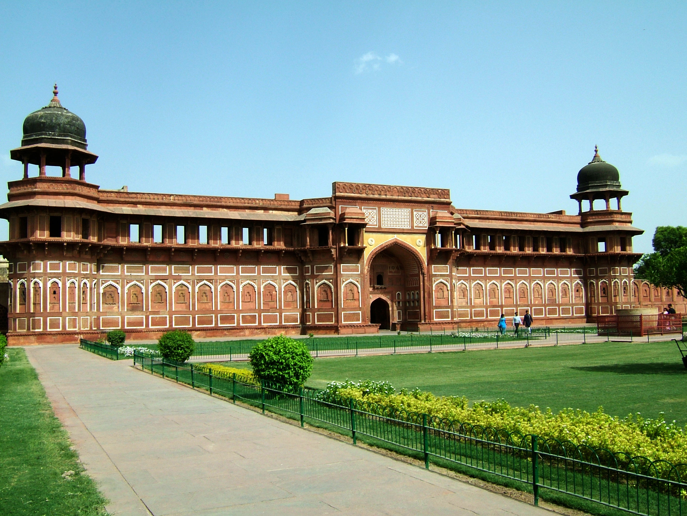

The Taj Mahal is considered the finest example of Mughal architecture, a style that combines elements from Persian, Indian, and Islamic architectural styles. In 1983, the Taj Mahal became a UNESCO World Heritage Site and was cited as "the jewel of Muslim art in India and one of the universally admired masterpieces of the world's heritage.
The Taj is an experience of its own kind, while on the one hand its magnanimity is so sublime, so on the other the exquisite inlay work and detailed craftsmanship together with the calligraphy is simply amazing. The combination simply leaves one absolutely mesmerized. The sheer splendour of the mausoleum is consummate, and the vastness is simply monumental.


Also known as Lal Qila, Fort Rouge or Red Fort of Agra, the Agra Fort is a massive fortification located on the right bank of the river Yamuna in Agra, Uttar Pradesh, at a mere distance of 2.5 kilometres from the world famous Taj Mahal. Encompassing an entire city within its walls, this imposing structure was built in the year 1573 by Mughal supremo Akbar himself. Agra Fort was the main residence of the Mughal up to the year 1638 when the capital was shifted from Agra to New Delhi. Owing to its historic importance and bedazzling construction, the Agra Fort has also been listed as a UNESCO world heritage site.
The city of Agra is full of architectural wonders. On one hand, it has the famous Taj Mahal, and on the other hand, it has the Agra Fort and Itmad-ud-Daulah's mausoleum. Itmad-ud-Daulah's tomb is a highly ornate edifice, which is looked upon as an imminent precursor of the Taj Mahal as far as elaborate carvings and inlay work are concerned. The tomb marks a significant departure from the tombs of the Mughal dynasty built before its construction.The pure white and elaborately carved tomb of Itmad-ud-Daulah conforms to the Islamic style of architecture. The use of arched entrances, octagonal shaped towers or minarets, use of exquisitely carved floral patterns, intricate marble-screen work and inlay work are all representative of the Islamic style. The absence of a dome and the presence of a closed kiosk on top of this building and the use of chhatris (small domed canopies, supported by pillars) atop the four towers (minarets) instead of proper domes are reflective of local influence.

As the name suggests, Kinari Bazaar is the wholesale market for fancy laces, borders and tassles. Additionally, you will find all kinds of beads and bead work items, fancy paper items including envelopes for gifting, adornments for idols and festival decorations, and much more. In short, Kinari Bazaar is a designer’s paradise. You will routinely find many design students and professionals that are hoping to find unique laces, borders, bead work and other accessories to realize their design vision or to simply unleash their creative juices. Kinari Bazaar also happens to be a popular jaunt with tourists for a lot of funky silver jewellery and accessories that is so very affordable